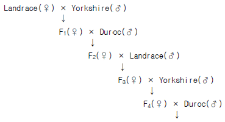

축산기사 (2005-05-29 기출문제)
1과목: 가축육종학
1. 어느 Holstein종 젖소 집단에 있어 B의 유전자 빈도가 0.9이고 b의 유전자 빈도는 0.1이다. 이 집단이 Hardy - Weinberg 평형상태에 있을 때 Bb의 빈도는?
- 0.14
- 0.16
- 0.18
- 0.20
(정답률: 75%)

2. 비육우의 도체 품질에 관한 형질이 아닌 것은?
- 도체장
- 도체율
- 정육율
- 등지방 두께
(정답률: 54%)
3. 대립형질의 수가 2쌍일 때 F1의 유전자형 종류와 F2에서 총 개체수는 몇 개인가?
- 2종류, 4개
- 2종류, 8개
- 4종류, 8개
- 4종류, 16개
(정답률: 56%)
4. 돼지에서 잡종 강세 현상을 얻기 위하여 잡종 교배를 많이하게 되는데 이 때 수퇘지로 사용되는 품종의 특징이 아닌 형질은?
- 산자수
- 성장율
- 사료 효율
- 도체 품질
(정답률: 73%)
5. 육종가의 설명으로서 틀린 것은?
- 가축의 육종가는 상가적 유전형가의 총합이다.
- 가축의 육종가는 전달능력(transmittingability)의 2배이다.
- 가축의 육종가는 실생산능력(real producing ability) 보다 항시 적다.
- 육종가의 계산은 반복력(repeatability)을 곱하여 구한다.
(정답률: 54%)
6. RNA는 DNA와 다른 어떤 염기(鹽基)를 지니고 있는가?
- 티민(Thymine)
- 아데닌(Adenine)
- 우라실(Uracil)
- 시토신(Cytosine)
(정답률: 76%)
7. 비대립 관계에 있는 2쌍의 유전자가 특정의 1형질에 관여하는 경우 한쪽의 유전자는 특별한 발현작용이 없으면서 다른 쌍에 속하는 유전자의 작용을 발현하지 못하게 하는 경우의 유전자는?
- 보족유전자
- 억제유전자
- 동의유전자
- 변경유전자
(정답률: 83%)
8. 선발의 효과를 크게 하기 위한 조건이 아닌 것은?
- 유전력을 높인다.
- 선발차를 크게 한다.
- 세대간격을 길게 한다.
- 유전적 개량량이 커야 한다.
(정답률: 83%)
9. 암소를 개량하는데 있어 개량 속도가 가장 빠를 것으로 생각되는 형질은?
- 산유량
- 유지량
- 유지율
- 수태당 종부 회수
(정답률: 73%)
10. 조합능력의 개량을 위한 육종법은?
- 계통교배법
- 독립도태법
- 유전방안지법
- 상반반복선발법
(정답률: 74%)
11. 집단내 동형접합체(homozygote)의 비율을 높게 하고 이형 접합체(heterozygote)의 비율을 낮게 하는 교배법은?
- 잡종교배
- 누진교배
- 종간교배
- 근친교배
(정답률: 75%)
12. 한우의 이유 후 증체율에 대한 설명으로 틀린 것은?
- 이유 후 증체율이 높으면 사료이용성이 좋다.
- 이유 후 증체율이 높으면 생산비가 저하된다.
- 이유 후 증체율은 이유 후 일당 증체량으로 표시한다.
- 이유 후 증체율의 유전력은 0.25로 낮다.
(정답률: 68%)
13. 다음 중 성격이 다른 유전자는?
- 상위유전자(epistatic gene)
- 중복유전자(duplicate gene)
- 복다유전자(multiple gene)
- 중다유전자(polygene)
(정답률: 72%)
14. 소의 치사유전자 중에는 완전 치사유전자와 부분 치사유전자 등이 있다. 부분치사(반치사)는 어느 것인가?
- 무모
- 다제
- 연골 발육부전
- 상피부전
(정답률: 42%)
15. 산란계의 경제형질에 속하지 않는 것은?
- 산란율
- 생존율
- 성장율
- 난각질
(정답률: 58%)
16. 다음 중 소의 주조직 적합성 복합체 (major histocompatability complex, MHC)를 일컫는 것은?
- H-2
- BoLA
- ELA
- HLA
(정답률: 50%)
17. 젖소의 경제 형질 중 번식형질에 대한 설명으로 맞지 않는 것은?
- 번식형질의 대부분은 유전력은 낮으나 반복력은 높다.
- 번식형질에는 유전자들의 효과가 거의 미치지 않는다.
- 번식형질에는 번식효율, 수태당 종부회수, 분만간격 등을 말한다.
- 번식형질의 상가적인 유전분산이 낮은 것은 주로 환경이 영향을 준다는 것을 의미한다.
(정답률: 50%)
18. 다음과 같은 방식의 잡종 교배 방법은?

- 3원 종료 교배
- 3원 종료 윤환 교배
- 3원 윤환 교배
- 상호 역교배
(정답률: 64%)
19. 개의 혈우병 유전자는 반성 열성 유전자(h)에 의하여 유전 된다고 한다. 수컷 100두 중 5두가 혈우병을 나타내는 집단의 혈우병 유전자 빈도와 암컷 중 혈우병을 나타내는 비율을 올바르게 나타낸 것은?
- 0.02와 5%
- 0.02와 0.04%
- 0.⑤와 5%
- 0.⑤와 0.25%
(정답률: 53%)
20. 어느 계통을 여러 개의 다른 계통에 교배시켜 생기는 각종 F1의 평균능력은 무엇을 나타내는가?
- 우성효과
- 상위성효과
- 일반조합능력
- 특정조합능력
(정답률: 63%)
2과목: 가축번식생리학
21. 소의 외부적 발정징후로 옳지 않은 것은?
- 숫소의 승가를 허용한다.
- 불안해하고 자주 큰소리로 운다.
- 식욕이 왕성해지고 온순하여진다.
- 외음부는 충혈하여 붓고 밖으로 맑은 점액이 흘러 나온다.
(정답률: 73%)
22. 프로스타글란딘(prostaglandin)에 대해서 바르게 설명한 것은?
- 황체퇴행
- 황체호르몬(progesterone)의 분비 증대
- 자궁근의 수축 억제
- 난소에서 분비
(정답률: 61%)
23. 뇌하수체 전엽에서 분비되는 호르몬은?
- 난포자극 호르몬
- 옥시토신
- 웅성 호르몬
- 난포 호르몬
(정답률: 59%)
24. 수란우의 선정조건이 아닌 것은?
- 우수한 유전형질을 보유하고 있는 소
- 적절한 영양상태를 유지하고 있는 소
- 건강한 생식기를 보유하고 있는 소
- 질병 및 대사장애가 없는 건강한 소
(정답률: 54%)
25. 불완전 발정주기에 대한 설명 중 틀린 것은?
- 불완전 발정주기에서도 난포발육, 배란 및 황체형성이 반복된다.
- 불완전 발정주기의 황체는 교미자극에 의하여 분비 기능이 생긴다.
- 불완전 발정주기는 4∼6일 간격으로 반복된다.
- 불완전 발정주기를 가지는 동물은 교미자극이 없으면 배란이 일어나지 않는다.
(정답률: 46%)
26. 성성숙에 영향을 미치는 요인에 관한 설명 중 부적당한 것은?
- 신체발육과 성성숙은 무관하다.
- 동물종, 품종 및 계통간에 성성숙 시기의 차이가 있다.
- 출생계절에 따라 성성숙 시기가 달라질 수 있다.
- 사육시설, 위생상태와 같은 환경 조건도 성성숙에 영향을 미친다.
(정답률: 73%)
27. 자궁내 미이라변성 태아가 있을 때에 대한 설명 중 잘못된것은?
- 난포의 발육이 억제되어 발정이 나타나지 않는다.
- 난소에 위축된 난포가 많이 있다.
- 감염으로 태아와 태막의 탈수에 의해 발생한다.
- 프로스타글란딘(prostaglandin)의 투여로 태아를 배출시켜야 한다.
(정답률: 49%)
28. 다음 중 유즙분비와 유즙강하(milk letdown)에 관여하는 호르몬을 올바르게 연결한 것은?
- 유즙분비 - FSH, 유즙강하 - progesterone
- 유즙분비 - prolactin, 유즙강하 - progesterone
- 유즙분비 - FSH, 유즙강하 - oxytocin
- 유즙분비 - prolactin, 유즙강하 - oxytocin
(정답률: 59%)
29. 직장검사에 의한 소의 임신진단시 확인되는 부분은?
- 태막의 유무
- 태막의 두께
- 난포의 크기
- 태아의 심박동
(정답률: 45%)
30. 젖소에 있어서 난포낭종이 발생하는 가장 대표적인 원인은?
- FSH의 분비부족
- LH의 분비과잉
- LH의 분비부족
- LTH의 분비부족
(정답률: 52%)
31. 수정 적기를 결정하는 생리적 요인이 아닌 것은?
- 배란시기
- 난자의 수정능력 유지시간
- 분만 후 자궁정복 시기
- 정자가 수정부위까지 상행하는데 요하는 시간
(정답률: 64%)
32. 젖소의 유선포 상피세포에서 분비된 유즙의 이동경로를 맞게 설명한 것은?
- 유선포 - 유선엽 - 유선관 - 유두조 - 유두관
- 유선포 - 유선조 - 유선관 - 유두조 - 유두관
- 유선포 - 유선엽 - 유선조 - 유두조 - 유두관
- 유선포 - 유선관 - 유선엽 - 유두조 - 유두관
(정답률: 58%)
33. 다음 가축 중 자궁의 형태가 분열자궁이 아닌 것은?
- 돼지
- 면양
- 소
- 말
(정답률: 63%)
34. 소의 경우 조기임신진단방법으로서 수정 후 21‾24일 사이에 우유내 이 호르몬을 측정하여 일정한 수준이 넘으면 임신으로 판정을 한다. 이 호르몬은?
- Cortisol
- 17β-Estradiol
- Testosterone
- Progesterone
(정답률: 63%)
35. 정자의 완성과정(Spermiogenesis)을 순서대로 나열한 것은?
- 골지기 - 두모기 - 첨체기 - 성숙기
- 골지기 - 첨체기 - 두모기 - 성숙기
- 두모기 - 골지기 - 첨체기 - 성숙기
- 두모기 - 첨체기 - 골지기 - 성숙기
(정답률: 64%)
36. 낙농산업에서 고능력 젖소를 증식하는데 암컷 송아지를 선호하므로 수정란을 이식할 때 성감별이 중요하다. 다음 중 어느 성염색체형의 수정란을 이식해야 암컷 송아지를 생산할 수 있는가?
- X
- Y
- XX
- YY
(정답률: 47%)
37. 성숙된 포유가축에서 정소상체의 주요한 생리적 기능이아닌 것은?
- 정자의 농축
- 정자의 저장
- 정자의 성숙
- 정자의 생산
(정답률: 64%)
38. 성숙한 포유가축의 난포에서 제2극체가 방출되는 난자의 제2차 성숙분열은 언제 일어나는가?
- 배란 직전
- 배란 직후
- 수정직전
- 수정직후
(정답률: 57%)
39. 다음 어떤 경우에 정자생성(spermatogenesis)이 심각하게 악화되고 정자 형성 기능이 저하되는가?
- 비타민 A와 D의 결핍시
- 비타민 A와 E의 결핍시
- 비타민 E와 K의 결핍시
- 비타민 K와 D의 결핍시
(정답률: 54%)
40. 주요 가축의 번식적령기를 결정하는 주요 요인은?
- 온도와 위도
- 월령과 체중
- 계절과 일조시간
- 집단의 개체수
(정답률: 61%)
3과목: 가축사양학
41. 동물체내에서 포도당의 해당과정(Glycolysis)으로부터 생성되는 ATP수는?
- 3
- 5
- 8
- 11
(정답률: 65%)
42. 동물체 내에서의 물의 생리적 기능을 설명한 것으로 틀린것은?
- 용매제로서 우수하고 이상적인 분산배지이다.
- 비열과 증발열이 적어 체온 상승을 막아준다.
- 영양소와 대사생성물의 수송을 돕는다.
- 체액의 구성물질이며 조직기관의 관절부에서 윤활유 역할을 한다.
(정답률: 66%)
43. 유지율 3.2%의 우유 20㎏을 유지율 4% 보정유(FCM)로 환산하면 얼마인가?
- 15.6㎏
- 17.6㎏
- 19.6㎏
- 21.6㎏
(정답률: 57%)
44. 탄수화물의 혐기성발효의 결과로 생성되는 휘발성 지방산에 해당하지 않는 것은?
- acetic acid
- propionic acid
- stearic acid
- butyric acid
(정답률: 65%)
45. 곡류의 이용성을 높이기 위하여 전분을 알파화시키는 가공 처리가 아닌 것은?
- 증기압편(후레이크)
- 가압압편(후레이크)
- 건열처리가공
- 수침
(정답률: 67%)
46. 갑상선 종양을 일으킬 수 있는 물질(goitrogenic)을 갖고 있는 사료는?
- 대두박
- 호마박
- 채종박
- 임자박
(정답률: 69%)
47. 사료의 품질평가 구성 항목 중 소화율이 낮은 세포벽 구성 물질은 어느 것인가?
- 리그닌
- 단백질
- 전분
- 펙틴
(정답률: 73%)
48. 가축의 기초 대사량을 설명한 것 중 가장 적당한 것은?
- 가소화성분의 산화로 생성되는 일
- 몸 유지에 소모되는 에너지
- 섭취한 사료의 소화에 소요되는 에너지
- 호기적 조건에서의 열생산량
(정답률: 69%)
49. 탈항(脫肛)의 예방책으로 볼 수 없는 것은?
- 점등의 광도를 너무 밝게 하여 준다.
- 부리자르기를 실시한다.
- 콕시듐병의 감염을 피한다.
- 가급적 산란케이지에 늦게 올린다.
(정답률: 52%)
50. 돼지영양에서 영양적 결핍이 가장 민감한 성장 단계는?
- 강정기
- 포유기
- 육성기
- 비육기
(정답률: 64%)
51. 케톤체(Ketone body)가 생기는 원인과 거리가 먼 것은?
- 초산과 낙산이 많을 경우
- 포도당의 섭취량이 매우 적은 경우
- oxaloacetate가 많은 경우
- 간에서 당류의 분해에 이상이 있는 경우
(정답률: 55%)
52. 옥수수와 대두박 위주의 산란계 사료에서 제 1제한 아미노산은 무엇인가?
- 메티오닌(methionine)
- 알라닌(alanine)
- 글루타민(glutamine)
- 타이로신(tyrosine)
(정답률: 79%)
53. 황을 함유한 아미노산이 아닌 것은?
- 시스테인(cysteine)
- 메티오닌(methionine)
- 시스틴(cystine)
- 트립토판(tryptophan)
(정답률: 60%)
54. 특히 고능력 젖소의 경우 건유기사양은 착유시 못지 않게 중요하다. 다음 중 건유기 사양의 중요성과 관계 없는 것은?
- 비유기관의 활성유지
- 임신중인 태아의 성장
- 비유기 모체 영양손실의 회복
- 다음 착유기간을 위한 영양축적
(정답률: 54%)
55. 비육용 사료를 선택할 때 고려할 사항과 가장 거리가 먼것은?
- 가축의 성별
- 기호성
- 경제성
- 영양가
(정답률: 76%)
56. 필수아미노산인 것은?
- 알라닌(alanine)
- 시스틴(cystine)
- 라이신(lysine)
- 타이로신(tyrosine)
(정답률: 67%)
57. 비타민 E의 중요한 생리적 기능으로 올바르게 설명한 것은?
- 지방의 산화방지 역할을 한다.
- 구루병을 예방한다.
- 빈혈증을 예방한다.
- 골연증을 예방한다.
(정답률: 64%)
58. 한우거세의 효과 중 육량에 대한 효과로서 틀린 것은?
- 비거세우에 비해 정육율이 높아진다.
- 일당 증체량이 떨어진다.
- 출하체중 도달일수가 지연된다.
- 사료효율이 낮다.
(정답률: 60%)
59. 사료영양소의 분류에서 가용무질소물(NFE)에 해당되는 것은 어떤 것들인가?
- 중성지방, 규소
- 셀룰로오스, 리그닌
- 지방산, 아미노산
- 전분, 포도당
(정답률: 54%)
60. 지방이 근육내 침착되어 마블링이 많이 생성되도록 하기위해 비육기에는 어떤 사료를 급여해야 하는가?
- 고단백사료
- 고열량사료
- 고칼슘사료
- 고섬유소사료
(정답률: 74%)
4과목: 사료작물학 및 초지학
61. 화본과 사료작물의 일반적 특징으로서 맞지 않는 것은?
- 근계(根系)는 수염모양의 뿌리로 되어 있다.
- 줄기는 대체로 속이 비어 있고 둥글며 뚜렷한 마디를 가지고 있다.
- 잎은 나란히 맥으로 되어 있으며, 잎집, 잎혀, 잎몸으로 구성되어 있다.
- 종자는 등과 배쪽의 복합성을 따라서 벌어지는 하나의 꼬투리로 되어 있다.
(정답률: 50%)
62. 윤작의 장점으로서 옳지 않은 것은?
- 어떠한 작물이나 자유롭게 선택할 수 있다.
- 토지의 이용성을 높인다.
- 지력을 유지·증진시킬 수 있다.
- 노력을 합리적으로 분배할 수 있다.
(정답률: 46%)
63. 중부지방에서 담근먹이 옥수수의 뒷그루로 재배하기에 적합한 사료작물은?
- 대두
- 진주조
- 귀리
- 수수
(정답률: 36%)
64. 말의 사료용으로 많이 재배되는 맥류는?
- 연맥
- 대맥
- 호맥
- 트리티 케일
(정답률: 58%)
65. 목초의 파종량을 늘려주지 않아도 좋은 경우는 다음 중 어느 때인가?
- 발아율이 나쁠 때
- 파종기가 지났을 때
- 건조할 때
- 토양의 수분함량이 충분할 때
(정답률: 49%)
66. 인경(비늘 줄기)에 양분을 축적하여 영양번식을 하는 목초는?
- 토올페스큐
- 오차드그라스
- 알팔파
- 티머시
(정답률: 38%)
67. 뿌리가 얕아서 가뭄에 약하며 추위에 강하여 고랭지에 적합한 초종은?
- 오차드그라스
- 토올 페스큐
- 티머시
- 페레니얼 라이그라스
(정답률: 52%)
68. 우리나라 사료작물의 작부체계의 운영에 있어서 문제점들을 지적한 것으로 가장 올바른 것은?
- 농가가 품종에 대하여 잘 모르고 있거나 인식이 부족 하며 선택할 수 있는 다양한 품종이 없는 형편이다.
- 최우수 품종만을 제한적으로 공급하기 때문에 품종 선택에는 별 문제가 없다.
- 농가가 원하면 목초 및 사료작물 종자는 정부가 지원하고 있기 때문에 농가는 선택권이 전혀 없다.
- 지역적으로 너무 많은 품종들이 나와 있기 때문에 어떤 품종을 선택해야 할지 결정에 어려움이 있다.
(정답률: 61%)
69. 청예용 호밀의 성분 중 수확이 개화이후로 늦어질수록 증가하는 성분은?
- 유기산과 당류
- 전분과 섬유소
- 단백질과 비타민
- 리그닌과 질산염
(정답률: 42%)
70. 간이 초지개량시 사용되는 제초제 종류가 아닌 것은?
- 그라목손(Gramoxone)
- 근사미(Glyphosate)
- 피트(Peat)
- DPD(Dalapon)
(정답률: 28%)
71. 방목에 가장 잘 적응하는 목초들은?
- 켄터키 블루그라스, 페레니얼 라이그라스
- 오차드 그라스, 이탈리안 라이그라스
- 티머시, 페레니얼 라이그라스
- 토올페스큐, 이탈리안 라이그라스
(정답률: 37%)
72. 목초가 재생을 위해 저장하는 영양소의 주 형태는?
- 무기질
- 지방
- 탄수화물
- 단백질
(정답률: 47%)
73. 청예용 호밀의 특징으로 맞는 것은?
- 맥류 중 내한성이 강하다.
- 토양을 가리는 성질이 강하다.
- 담근먹이로만 이용할 수 있다.
- 답리작 재배가 불가능하다.
(정답률: 59%)
74. 디스크 해로우(disk harrow)의 용도는?
- 땅을 갈기
- 석회 살포
- 파종 후 진압
- 쇄토 및 정지
(정답률: 47%)
75. 답리작 사료작물로서 우리나라의 남부지방에서 가장 적합한 종류는?
- 연맥
- 호밀
- 페레니얼 라이그라스
- 이탈리안 라이그라스
(정답률: 64%)
76. 알팔파의 생육을 제한하는 가장 큰 요인은?
- 토양 중 무기인산 함량
- 산성토양
- 토양미생물
- 잡초
(정답률: 43%)
77. 사일리지 제조시 유산발효 촉진을 위한 첨가물은?
- 당밀
- AIV액
- 개미산
- 포름알데히드
(정답률: 46%)
78. 불경운 초지개량의 장점이 아닌 것은?
- 토양 침식의 위험이 적다.
- 기계 사용이 불가능한 지대라도 초지조성이 가능하다.
- 우중(雨中)이나 강우(降雨) 직후에도 목초 파종이 가능하다.
- 어린 목초의 정착이 빠르다.
(정답률: 49%)
79. 화본과 목초의 채초, 예취의 가장 적당한 시기는?
- 개화직후
- 출수직전이나 출수직후
- 개화만개시
- 종실의 유숙기
(정답률: 60%)
80. 우리나라 초지의 저위 생산성에 영향을 미치는 요인이 아닌 것은?
- 이른 봄 생육지연
- 추비시용량 부족
- 초지의 배수불량
- 과다 또는 과소 이용
(정답률: 30%)
5과목: 축산경영학 및 축산물가공학
81. 기업적 축산경영의 가장 중요한 목표는?
- 축산 조수익을 극대화 하는 것
- 축산 순수익을 극대화 하는 것
- 축산물 생산을 최대로 하는 것
- 축산 경영비용을 최소화 하는 것
(정답률: 49%)
82. 수익성 지표에 포함되지 않는 것은?
- 순수익
- 소득
- 1인당 가족노동보수
- 노동생산성
(정답률: 45%)
83. 축산경영의 수익을 극대화 하는 조건은?
- 한계수입이 한계비용 보다 크거나 같을 때
- 한계수입이 한계비용과 같을 때
- 한계수입이 한계비용 보다 클 때
- 한계수입이 평균비용 보다 크거나 같을 때
(정답률: 64%)
84. 비육우경영에서 생산비 중 가장 커다란 비중을 차지하는 비목은?
- 진료위생비
- 가축비
- 고용노임
- 감가상각비
(정답률: 63%)
85. 가계와 경영이 분화되어 있지 않은 소규모 가족적 축산 경영농가의 축산 경영의 목적은?
- 축산 소득
- 축산 순수익
- 축산 조수익
- 축산물 생산량
(정답률: 49%)
86. 비육돈 경영에서 수익성 제고 방안으로 적절하지 않은 것은?
- 연간 비육회전율의 최대화
- 판매돈 1마리당 매상고의 최대화
- 사고 폐사율의 최소화
- 상시 사양두수의 최소화
(정답률: 52%)
87. 튜넨(H.Von.Thunen)의 고립국에서 도시와 가장 가까운 곳의 경영방식은?
- 목축
- 삼포식
- 자유식
- 윤재식
(정답률: 21%)
88. 축산경영의 일반적 특징이라고 할 수 있는 것은?
- 농산물의 이용 증진
- 물량감소의 성격
- 노동력의 이용증진
- 농업의 안정화
(정답률: 38%)
89. 비육경영에서 시설을 개선하고자 한다. 우선적으로 고려할 사항이 아닌 것은?
- 사육규모
- 자금의 조달
- 장래의 경영목표
- 생산물 판매
(정답률: 57%)
90. 토지의 경제적 성질에 대한 설명으로 올바른 것은?
- 토지는 무한정으로 개발 이용하는 성질을 가진다.
- 토지는 산업상의 입지로서 생산물과 생산시설물을 적재할 수 있는 성질을 가진다.
- 토지는 움직일 수도 없고, 증가시킬 수도 없고, 소모되지도 않는 성질을 가진다.
- 토지는 작물을 재배할 수 있는 물리적 성질을 가진다.
(정답률: 42%)
91. 축산경영조직의 성립에 영향을 미치는 요인으로 볼 수 없는 것은?
- 기온, 강수량, 풍력 등의 기상조건
- 토질, 물, 지형, 지세 등의 토지의 성상(性狀)
- 시장의 크기와 축산정책
- 경영자의 자질과 고용노동력의 능력
(정답률: 29%)
92. 양돈시설을 자동화하려고 한다. 자동화 효과가 아닌 것은?
- 작업의 복잡화
- 노동력 절감 및 규모확대
- 작업의 신속화 및 평균화
- 노동생산성 향상
(정답률: 58%)
93. 낙농농가의 경영개선에 의한 생산비 절감방안이라고 할 수 없는 것은?
- 사료효율 향상
- 사육규모의 적정화
- 우유등급 향상
- 산유량 증대
(정답률: 38%)
94. 우리나라 양계산업 발전방향이 아닌 것은?
- 노동력 이용형 기술개발
- 사료효율의 개선
- 종계의 국내생산
- 양계경영의 기계화
(정답률: 48%)
95. 두 생산요소의 결합에 있어 최소의 비용이 되는 조건은?
- 한계대체율이 0일 때
- 두 생산요소의 가격비가 0일 때
- 두 생산요소의 가격비가 한계대체율보다 클 때
- 두 생산요소의 가격비가 한계대체율과 같을 때
(정답률: 53%)
96. 국민경제의 발전과 소득증대에 따라 일반곡물 수요에 비하여 축산물의 수요가 증대되는데, 그 이유를 옳게 설명한 것은?
- 일반곡물 수요가 축산물 수요에 비하여 소득탄력성이 크기 때문이다.
- 축산물 수요가 일반곡물 수요에 비하여 소득탄력성이 크기 때문이다.
- 일반곡물 수요가 축산물 수요에 비하여 가격탄력성이 크기 때문이다.
- 축산물 수요가 일반곡물 수요에 비하여 가격탄력성이 크기 때문이다.
(정답률: 50%)
97. 육계 10수당 조수입이 18,300원, 경영비가 15,800원, 생산비가 16,800원일 때 순수익은?
- 1,000원
- 1,500원
- 2,500원
- 3,000원
(정답률: 48%)
98. 다음 중 고정자본재라고 볼 수 있는 것은?
- 사료, 비료
- 산란계
- 육우, 육돈
- 비육축, 육계
(정답률: 56%)
99. 낙농경영의 입지조건으로 부적당한 것은?
- 수리와 교통이 편리한 지대
- 초지면적이 충분한 지대
- 전기, 도로 등 기간시설 근접 지대
- 공업단지와 가까운 지대
(정답률: 56%)
100. 농후사료 kg당 가격이 250원에서 300원으로 상승함에 따라 착유우 두당 7,000kg의 우유를 생산하는 농가가 농후사료를 3,500kg 급여하다가 500kg을 감소시키고 동일한 우유를 생산하기 위해 건초로 대체하기로 하였다. 이 때 건초는 기존에 급여하는 것보다 750kg이 더 소요되었을 때 건초 kg당 가격이 얼마일 때 사료비가 최소화 되는가?
- 200원
- 210원
- 220원
- 230원
(정답률: 29%)
따라서, B의 빈도인 p는 0.9이고 b의 빈도인 q는 0.1이다.
Bb의 빈도는 2pq이므로,
2pq = 2 x 0.9 x 0.1 = 0.18
따라서, Bb의 빈도는 0.18이다.